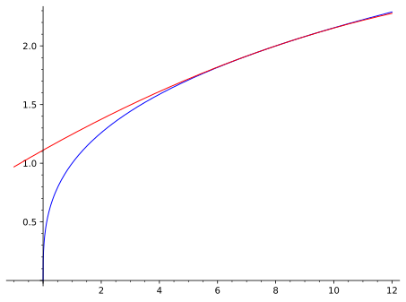

1.
Utilizando o polinômio de Taylor de ordem \(2\text{,}\) calcule um valor aproximado para \(\sqrt[3]{8.2}\) e avalie o erro.
Dica.
Utilize a fórmula de Taylor de ordem \(2\) para \(f(x)=\sqrt[3]{x}\text{,}\) em torno de \(x_0=8\text{.}\) Para estimativa do erro, use o resto de Lagrange e estime os valores máximo e mínimo que o coficiente dependendo de \(\overline{x}\in(8,8.2)\) pode assumir.
Resposta.
\(\sqrt[3]{8,2}\approx \dfrac{14519}{7200}\text{,}\) com erro \(E\) na aproximação satisfazendo \(1\times
10^{-6}<E <2\times 10^{-6}\)
Solução.
Lembrando que se \(f\colon A\subseteq\R\to\R\) é uma função \((n+1)\) vezes derivável no ponto \(x_0\in A\text{,}\) então é o polynômio de Taylor de ordem \(n\) para \(f\) em torno de \(x_0\text{,}\) dado por \(P_n\) é aquele que tem o mesmo valor de \(f\) em \(x_0\text{,}\) ou seja \(P_n(x_0)=f(x_0)\) e, além disso, todas as derivadas até ordem \(n\) de \(P_n\) e \(f\) também coincidem, ou seja, \(P_n^{(k)}(x_0)=f^{(k)}(x_0)\text{,}\) para todo \(k\in\{1,\ldots,n\}\text{.}\) Disto segue-se que
\begin{equation*}
P_n(x)=f(x_0)+f'(x_0)(x-x_0)+\dfrac{f''(x_0)}{2!}
(x-x_0)^2+\cdots+\dfrac{f^{(n)}(x_0)}{n!}(x-x_0)^n.
\end{equation*}
Para cada \(x\in A\) fixado, se \(f\) admite derivada de ordem \(n+1\) em todos os pontos do intervalo de extemos \(x_0\) e \(x\text{,}\) então o erro cometido na aproximação de \(f(x)\) por \(P_n(x)\text{,}\) \(E_n(x)=f(x)-P_n(x)\text{,}\) é dado por
\begin{equation}
E_n(x)=\dfrac{f^{(n+1)}(\overline{x})}{(n+1)!}(x-x_0)^{n+1}.\tag{1.1.1}
\end{equation}
Para verificar isto basta aplicar sucessivamente o Teorema A.1.1 para as funções \(E_n(x)\) e \(g(x)=(x-x_0)^{n+1}\) e suas derivadas, observando que \(E_n^{(k)}(x_0)=g^{(k)}(x_0)=0\) para todo \(k\in\{1,\ldots,n\}\) e que \(g^{(n+1)}(x)=(n+1)!\text{.}\)
No exercício em questão temos \(n=2\text{,}\) \(f(x)=\sqrt[3]{x}\text{,}\) e \(x_0=8\text{.}\) Com isso, \(f'(x)=\dfrac{1}{3x^{2/3}}\text{,}\) \(f''(x)=\dfrac{-2}{9x^{5/3}}\) e \(f'''(x)=\dfrac{10}{27x^{8/3}}\) e então
\begin{equation*}
f(8)=2,\qquad
f'(8)=\frac{1}{12}\qquad\text{e}\qquad
f''(8)=-\dfrac{1}{144}.
\end{equation*}
Logo, \(P_2(x)=f(8)+f'(8)(x-8)+\dfrac{f''(8)}{2!}(x-8)^2=2+\dfrac{x-8}{12}
-\dfrac{(x-8)^2}{144}\) e assim,
\begin{equation*}
\boxed{\sqrt[3]{8.2}=f(8.2)\approx
P_2(8.2)=2+\frac{8.2-8}{12}-\frac{(8.2-8)^2}{288}=\dfrac{14519}{7200}.}
\end{equation*}
Para estimar o erro nesta aproximação usaremos a expressão em (1.1.1), que torna-se
\begin{equation*}
E_2(8.2)=\dfrac{f'''(\overline{x}}{3!}(8.2-8)^2,
\end{equation*}
onde \(\overline{x}\in (8,8.2)\text{.}\) A função \(f'''(x)\) é estritamente descrescente nesse intervalo e portanto
\begin{equation*}
\dfrac{10}{27\times 2^8}=f'''(8)>f'''(\overline{x})>
f'''(8.2)>f'''(9)=\dfrac{10}{3^8\times\sqrt[3]{3}}.
\end{equation*}
Daí, multiplicando toda a desigualdade acima por \(\dfrac{(8.2-8)^3}{3!}=\dfrac{8}{3!\times 10^3}\text{,}\) a fim de transformar o termo do meio no erro,
\begin{equation*}
\dfrac{8\times
10}{3!\times 10^3\times 27\times 2^8}>E_2(8.2)>
\dfrac{8\times 10}{3!\times
10^3\times3^8\times\sqrt[3]{3}}.
\end{equation*}
Simplificando, \(\dfrac{8\times 10}{3!\times 10^3\times 27\times
2^8}<\dfrac{1}{2^9\times 10^3}<\dfrac{1}{5\times
10^5}=2\times 10^{-6}\) e, usando que \(\sqrt[3]{3}<
2\text{,}\) \(\dfrac{8\times 10}{3!\times
10^3\times3^8\times\sqrt[3]{3}}>\dfrac{1}{50\times
3^9}>1\times 10^{-6}\text{.}\) Logo
\begin{equation*}
\boxed{1\times
10^{-6}<E_2(8.2)<2\times 10^{-6}.}
\end{equation*}

Para "verificar" nossas estimativas, usamos uma boa calculadora e obtemos
\begin{align*}
\dfrac{14519}{7200}\amp = 2.01652777\ldots\\
\sqrt[3]{8.2} \amp = 2.01652967\ldots,
\end{align*}
mostrando que a diferença entre os valores aparece somente na sexta casa decimal (\(E_2(8.2)> 1\times 10^{-6}\)), mas o dígito da diferença nessa casa não é maior ou igual a \(2\) (\(E_2(8.2)<2\times 10^{-6}\)).